Lineaire regressie
Tags: AI
Date: 2020-11-21
Type: Cursus topic
Related:
Source :
Questionds : Q Lineair Regression
Notities
Enkelvoudige linaire regressie
- rechte die het dichtst bij alle punten ligt
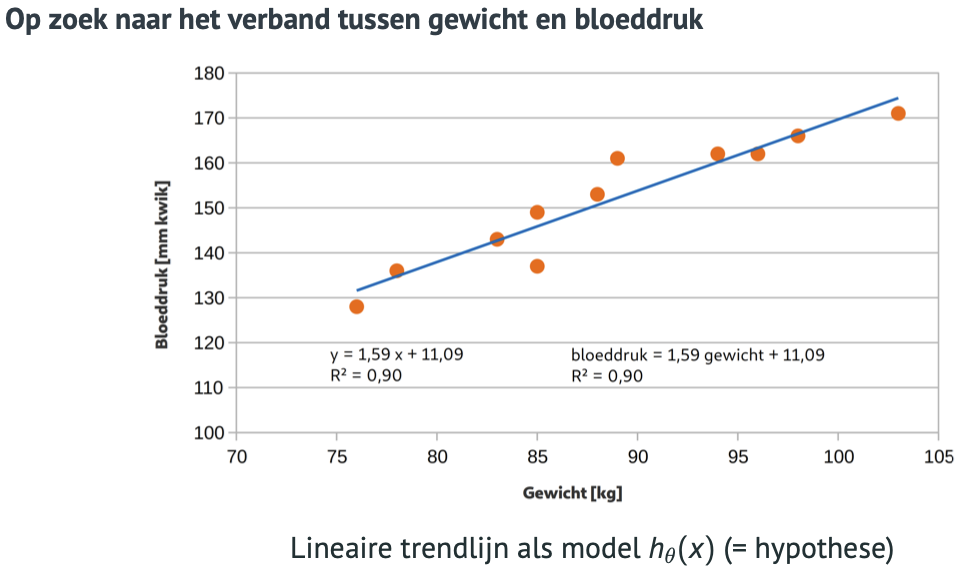 - mbv kostenfunctie bepalen welke parameters de beste zijn
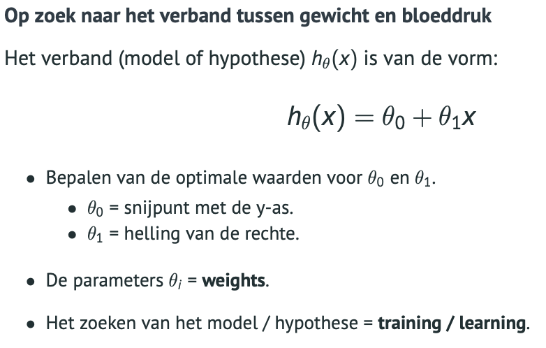 - die parameters zoeken we met gradient descent
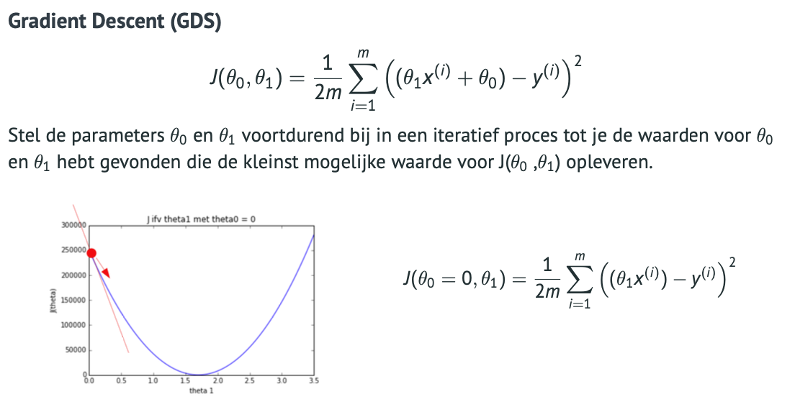
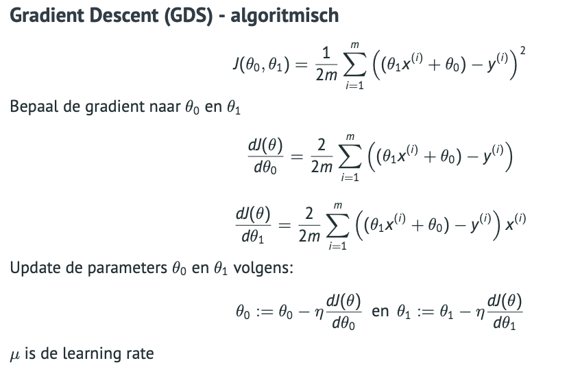 - learning rate grote stappen is beter dan kleine stappen (dan duurt het lang om het optimaal punt te vinden) maar je kan over je optimaal punt stappen door te grote stappen
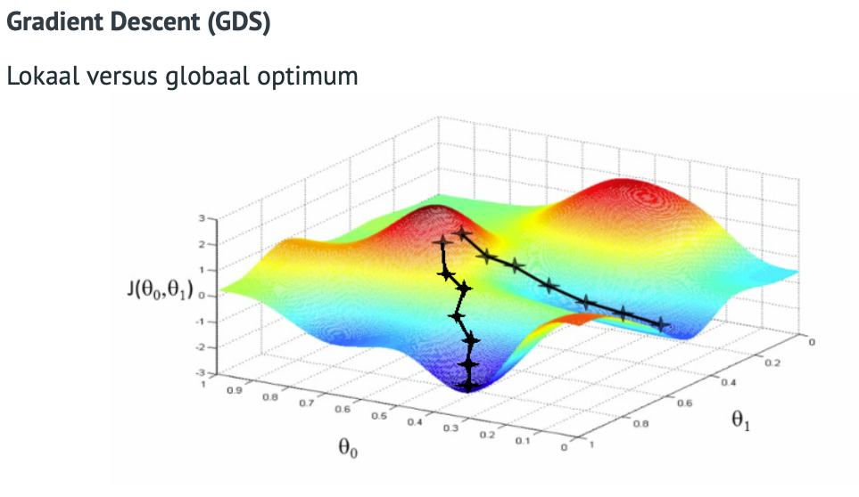
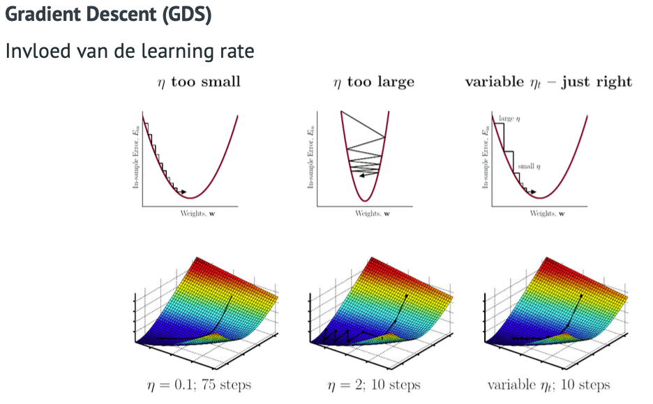
Meervoudige lineaire regressie
- het model/hypothese wordt bepaald aan de hand van een trainingset met meerdere features
- stappenplan dataanalyse
- consistentie van de dataset
- volledigheid van de dataset
- inconsistenties
- spreiding van de gegevens
- statistische voor analyse
- uitschieters
- verwijderen van extreme waarden/samples
- geavanceerde technieken (bij clustering)
- onderlinge correlaties zoeken mbv heatmap :
- +1: linair verband tss features ene omhoog en andere omhoog
- -1 : lineair verband tss features ene omhoog en andere omlaag
- verhoudig tss features bekijken via pairplot:
- uitschieters
- dataset opsplitsen in features en targets
- data opsplisten in training en testset:
- randomize om alle cases te kunnen trainen
- soms geen randomize mogelijk omdat volgorde van belang is (tijdreeks)
- testen van het model: (hiermee kunnen modellen vergeleken worden)
- MAE mean absolute error
$MAE = \dfrac{1}{n}\sum^n_{i=1}|y_i - \hat{y_i}|$
is het gemiddelde van de absolute waarden van het verschil tss de werkelijke waarden $y_i$ en de voorspelde waarden $\hat{y_i}$ - MSE mean squared error
$MSE = \dfrac{1}{n}\sum^n_{i=1}(y_i - \hat{y_i})^2$
is het gemiddelde van de gekwadrateerde waarden van het verschil tss de werkelijke waarden $y_i$ en de voorspelde waarden $\hat{y_i}$
-> hiermee gaan extreme cases slechter laten scoren - R2 determinatiecoëfficient
$R^2 = 1 - \dfrac{\sum^n_{i=1}(y_i - \hat{y_i})^2}{\sum^n_{i=1}(y_i - \bar{y})^2}$
zegt hoeveel van de variabiliteit verklaard wordt door het model. Perfecte voorspelling is $R^2$ = 1
Een negavtieve waarde voor $R^2$ betekent dat het model slechter scroot dan een horizontale lijn ($y_i = \bar{y}$)
-> score zo dicht mogelijk bij 1
- MAE mean absolute error
- consistentie van de dataset
Feature Engineering
normalisatie = features op dezelfde schaal brengen scalers
-> Gradient Descent convergeert minder snel als features op een verschillende schaalgrootte staan
min-max scaler
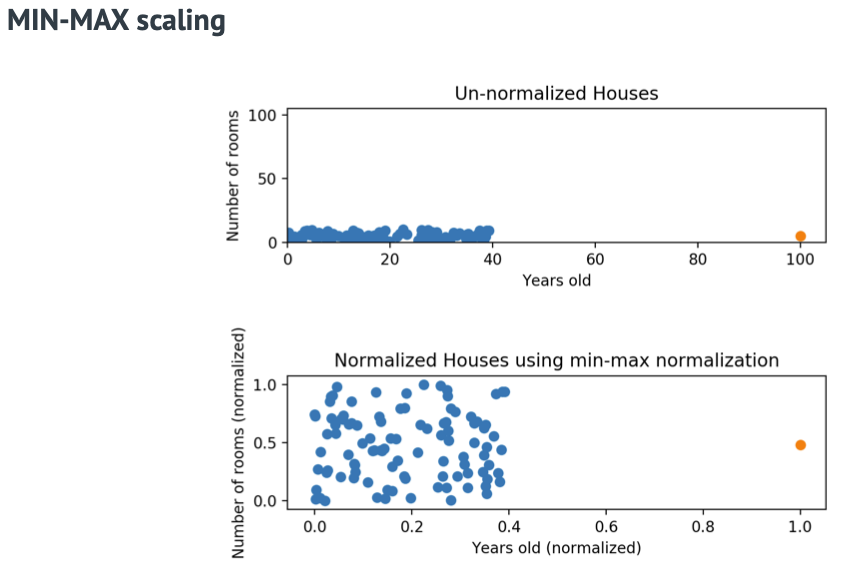
- schaalt alle features tss 0 en 1
- werkt goed bij niet Gaussiaanse distributires en bij kleine variantie
- de scheefheid (skew) blijft bewaard
- gevoelig voor uitschieters
standard scaler
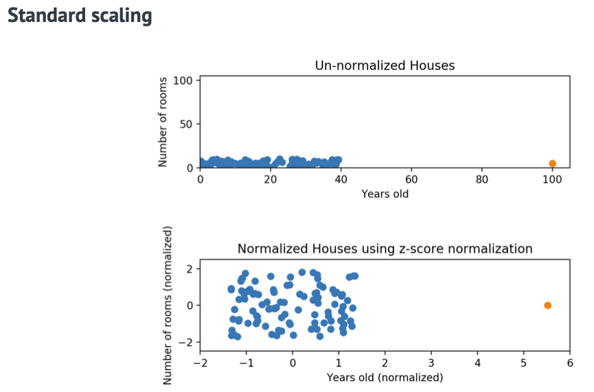
- Geschaalde features:gemiddelde = 0 en standaardafwijking = 1.
- Geschaalde features schommelen rond 0 (soms nodig bij deep learning).
- Vervormt geen relatieve afstanden tussen de feature waarden.
- Kan beter overweg met uitschieters.
- Garandeert geen genormaliseerde data op exact dezelfde schaal.
robust scaler
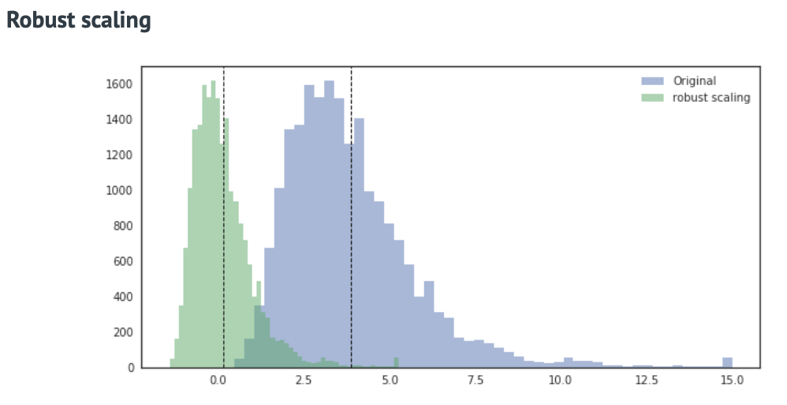
- Lijkt op MIN-MAX scaler maar gebruikt de interkwartielafstand ipv range.
- Houdt geen rekening met uitschieters.
- Gebruikt minder data bij het bepalen van de schaal.
- Range van de genormaliseerde data is groter dan bij MIN-MAX scaling.
- Garandeert geen genormaliseerde data op exact dezelfde schaal.
nieuwe features toevoegen
- manueel kwadraat feature toevoegen
- combinatie van features maken
- nieuwe feature uit bestaande feature halen (bijv dag van de week uit datum, uit begin en eindpunt afstand halen)
nieuwe opgemeten parameters
hogere orde features
het verband tss features en target(s) is niet altijd lineair
feature in kwadraat, tot de 3de, 4de macht
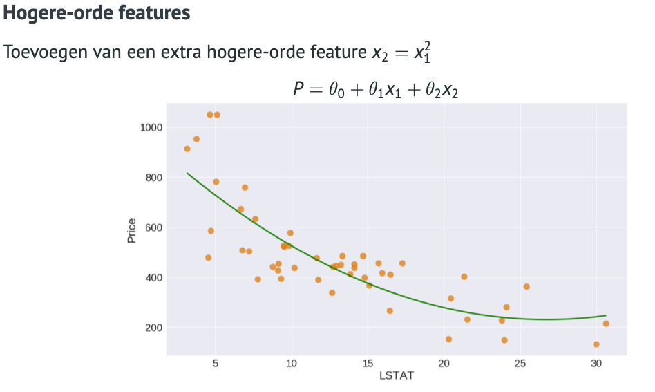
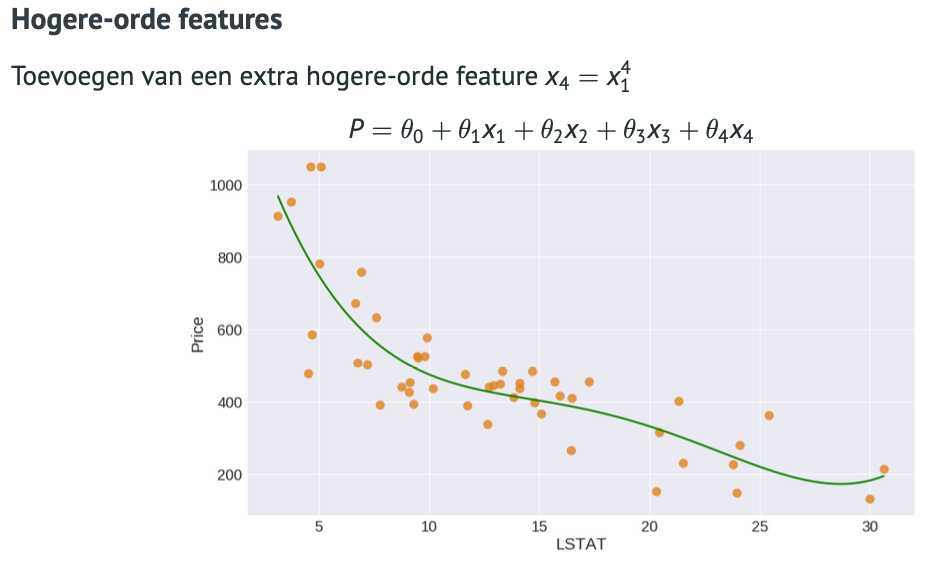one hot encoding:
omzetten van label/categorische variabelen naar meerdere aparte features
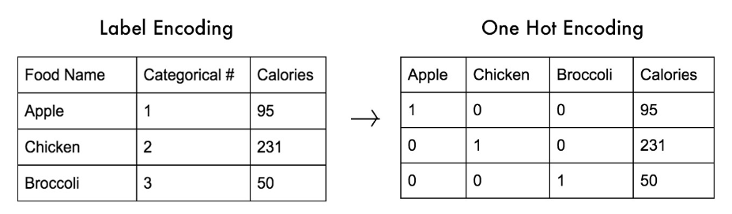
Underfitting, Overfitting
- underfitting
- model kan de trainingsdata niet modelleren
- en ook niet generaliseren op nieuwe data
- model is te eenvoudig
- model met een hoge bias
- als de R2 score op de trainingset (en testet) slecht is (= slechter scoort dan gewoon gemiddelde van targetwaarde nemen) dan is er sprake van underfitting
- overfitting
- model benadert de trainingsdata te goed - scoort heel goed
- het model kan niet meer generaliseren
- de ruis van de willekeurige fluctuaties in de data wordt opgepikt door het model
- model met een hoge variance
- maar scoort slechter op de testdata
- model is te complex
- als er veel features zijn dan is het moeilijker om overfitting te krijgen bij complex model
- als de R2 score op de trainingset veel beter scoort dan die op de testset dan is er sprake van overfitting (trainingset score bijna 1 en testset veel lager of zelfs negatief)
(zie ook Regularisatie )
Opsporen van uitschieters
uitschieters niet altijd te bepalen obv 1 feature op zich maar een combinatie van features (die soms zeer zeldzaam zijn !)
- naïeve manier:
- uitzonderlijke waarden van 1 feature > waardoor die ver verwijderd zijn van gemiddelde waarde
- data kuisen door alles te selecteren binnen de 5 standaardafwijkingen rond het gemiddelde
- MAAR extreme waarden erin laten indien ze geen gevolg zijn van fouten (sensoren die niet goed waren, type fouten, ...)
Correlatie matrix
X / y
- positief : positieve correlatie tss feature en gewenst resultaat
- negatief : negatieve correlatie
! geeft enkel linaire samenhang !
onderlinge correlatie van features > als de ene veranderd zal de andere op voorspelbare manier mee veranderen
als je features zou willen weglaten > kijken naar features die weining invloed hebben op target en die sterke correlatie hebben met andere features
pairplot
- indien je veel data hebt een subset nemen omdat het plotten anders lang duurt
- histogram op hoofddiagonaal (scatterplot met zichzelf zou rechte lijn geven)
- geeft aan hoe de waarden van dat feature verdeeld zijn
- welke scaler te gebruiken ?
- normaal > standaard scaler
- veel uitschieters > robust scaler
- one hot encoding > min max scaler (heel gevoelig aan uitschieters)
- welke scaler te gebruiken ?
- geeft aan hoe de waarden van dat feature verdeeld zijn
- andere plots zijn scatterplots
coeffIcient getraind model
- coefficiant = $\theta$ - gewicht van de feature om tot kwaliteitsscore te komen
- intercept = $\theta_0$ - constante die altijd aanwezig is
- als $\theta_n$ > 0 feature beinvloed target positief
- als $\theta_n$ < 0 feature beinvloed target negatief
- hogere orde feature toevoegen als lineaire verbanden van features niet gemapt/gekapteerd kunnen worden. hierdoor wel risico dat je complexer model krijgt en dat het dichter bij de trainingsdata gaat aanleunen en je overfitting krijgt.
Regularisatie
Methode om de mate van bias van een hypothese te regelen en een goed evenwicht te vinden tussen underfitting en overfitting. Je kan een extra kostenterm toevoegen die het gebruik van hogere orde features afstraft tenzij ze de globale kostenfunctie doen dalen. $+\lambda_1\sum_{j=1}^{n} |\theta_j|$ (als $\theta$ stijgt wordt model afgestraft)
Dit om te vermijden dat het model zich vastrijdt in ruis in de data:
- Lasso Regression : L1 regularisatie = absolute waarde $\theta$
$J_L1 = \sum^n_{i=1}(target^{(i)} - output^{(i)}) + \lambda_1 \sum^m_{j=1}|\theta_j|$ - Ridge Regression : L2 regularisatie = kwadraat van $\theta$ -> extreme waarden worden afgestraft
$J_L2 = \sum^n_{i=1}(target^{(i)} - output^{(i)}) + \lambda_2 \sum^m_{j=1}\theta^2_j$
!Opgelet! $\theta_0$ = bias wordt NIET geregulariseerd.
Met $\lambda$ bepaal je hoe hard regularisatie meespeelt ($\lambda$ in scikit learn = $\alpha$)
- $\alpha$ :
- zeer hoog => alle $\theta$ worden zeer laag of = 0, hoge bias, lage variantie (underfitting)
- kleine waarde => lage bias, hoge variantie (overfitting)
- $R^2$ score = 0 => model doet het niet beter dan als predictie steeds het gemiddelde zou zijn
- welke waarde voor $\alpha$ ?
- bepaling : $\alpha$ laten variëren en $R^2$ score daar tegen zetten => optimum van $\alpha$ waar $R^2$ voor testset de hoogste waarde heeft
voorbeeld hyperparameter tuning:
- waarden voor alpha 10000 wijst op underfitting. vooral het feit dat trainingsset slecht scoort wijst hierop.
waarden voor alpha 0.01 wijst op overfitting en L2 score voor test set wijst erop dat het slechter scoort dan de gemiddelde prijs
$\alpha$ = 10000 $\alpha$ = 0.01 $\alpha$ = 20 R2 score op test L2 0.29 -1.31 0.80 R2 score op training L2 0.29 0.99 0.95